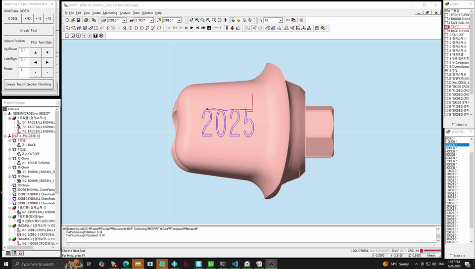
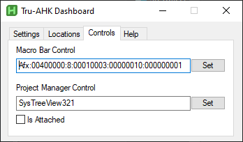
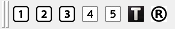

Tru-AHK Dashboard
Opening the Dashboard

- Click the system tray icon.
- Right click the master_switch.exe icon.
- Select the "Open Dashboard" option.
The Help Section

- Hotkey List
- Opens the document listing all the available hotkeys.
- Open Changelog
- Opens the document that outlines the changes done to the current version of the hotkey system.
The Settings Section

- F12 Mode
-
- Disabled
- Pressing F12 will not close any ESPRIT instances.
- Active Instance
- Will only close the currently active ESPRIT instance.
- All Instances
- Will close all ESPRIT instances.
- E Key Functionality
-
- Line
- The E key will draw a 20mm line.
- Line and Border
- The E key will draw a 20mm line and extrude it.
- W as Delete Key
- If enabled, the W key will be remapped to the Delete key.
Esprit Control Settings


In order for some of the hotkeys to function, the program must know the ID of the element it has to interact with. Unfortunately the IDs for some of the elements vary, so they must be set manually.
- Macro Bar Control
- 
- This one must be set for the macro bar hotkeys to work.
- Project Manager Control
- This one must be set for some of the operation hotkeys to work.
- If the macro bar is attached to the ESPRIT window, check the "Is Attached" checkbox. Otherwise, if it is unattached, leave it unchecked.
How to set a control
- Press the set button on the dashboard.
- Hover over the corresponding control and left click.